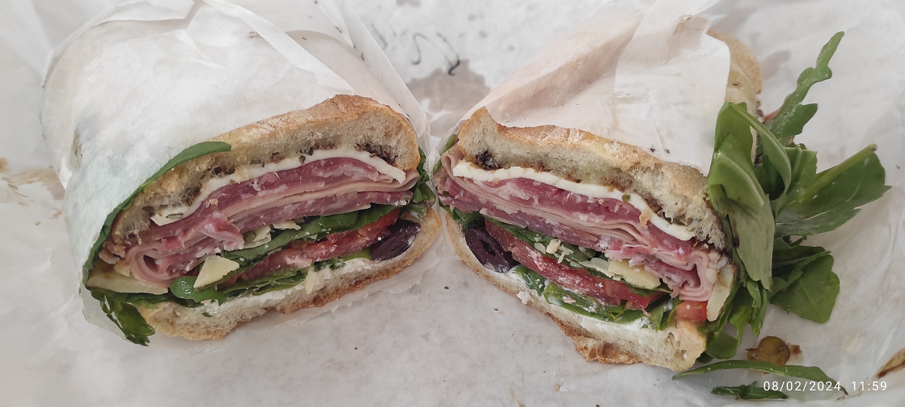
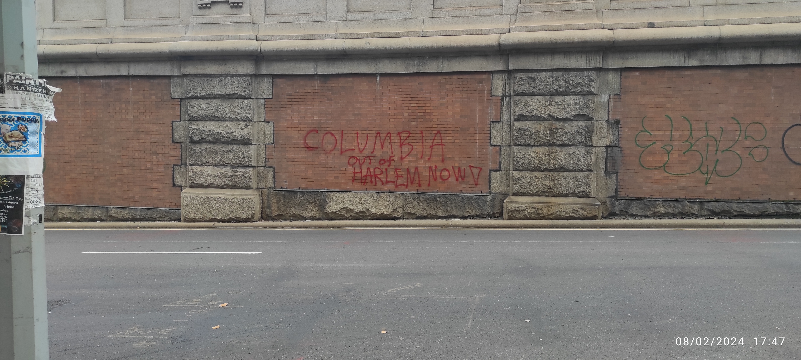
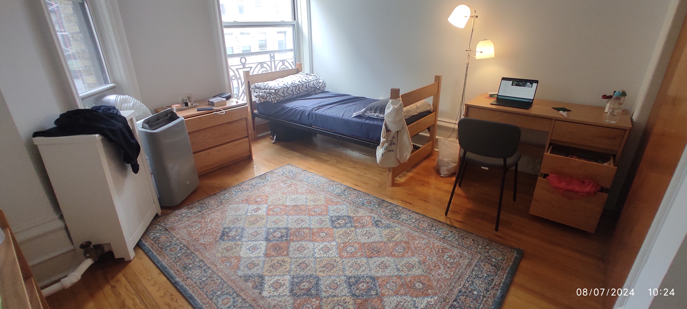
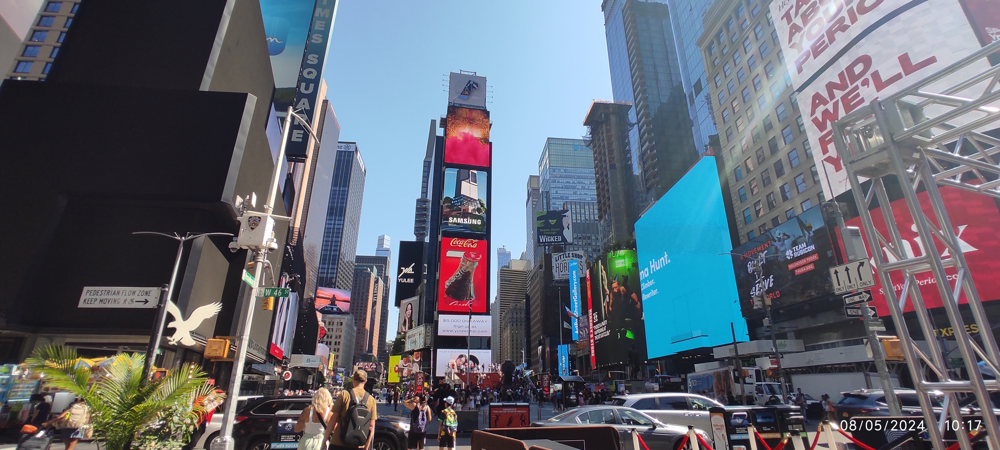
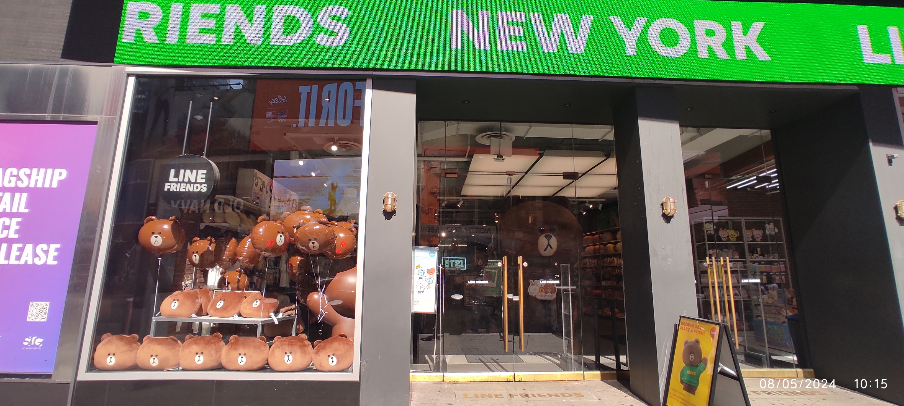
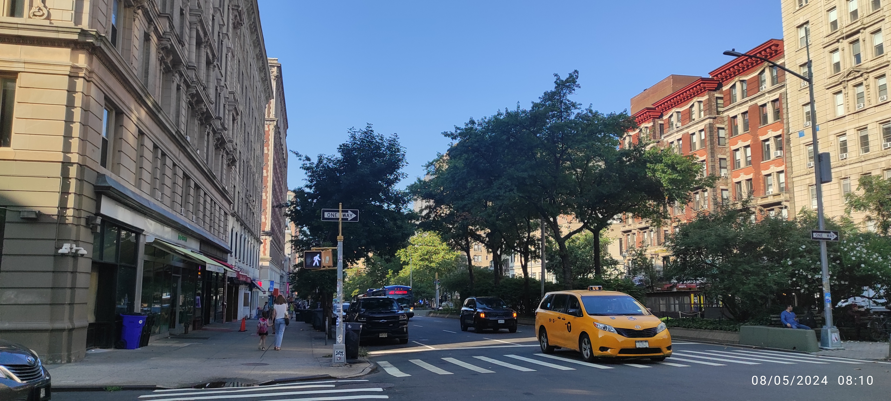
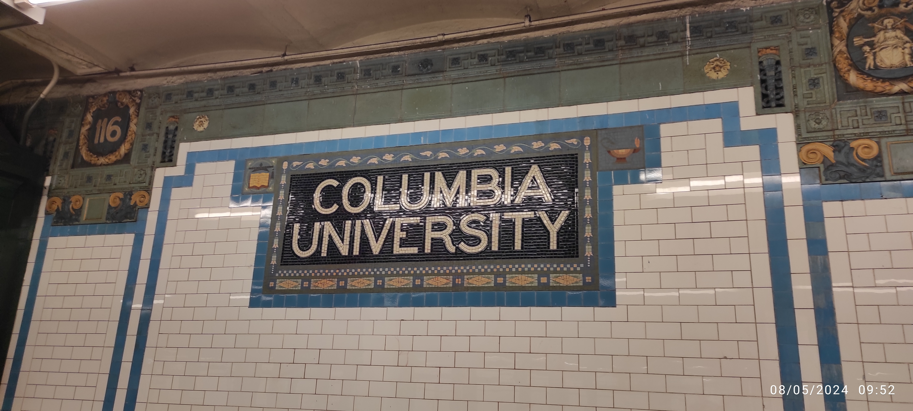

2024-08-07
單純記錄一些在紐約的所見所聞還有心情，所以以意識流（俗稱流水帳）的體例寫作。
從 2024-08-01
到紐約到現在過一個禮拜了，記錄一下所見所聞跟心情。

來到紐約的第二天領略到紐約的物價，這個三明治花了我 $17；份量確實是很多，但是結帳的時候嚇到。吃下去之後覺得超好吃，可以說是 Subway 的超級豪華版（當然價格也是超級豪華版⋯），所以好像也還行，只是要分成兩餐吃，不然會被自己吃垮。但是這一個禮拜過下來（大概知道這邊的物價水準之後）覺得分兩餐吃其實算是很便宜，是可以常吃的東西，所以這週大部分午餐晚餐都是在這家店解決。已經把這家店的菜單拿回家，準備把大部分的三明治菜單都吃過一遍。

哥倫比亞的北方就是 Harlem，是有名的黑人區。從機場到哥倫比亞的 Uber 上經過 Harlem 就被警告說這邊比較危險，看起來也是有點恐怖。傍晚稍微往北邊走的時候就看到橋墩上有「COLUMBIA OUT of HARLEM NOW!」的塗鴉。哥倫比亞在 1896 年移到現在的校址（原本在洛克斐勒中心旁邊，更早之前在馬哈頓更南方），過了一百多年還是格格不入。走在路上也有明確的感覺，一旦往北到 125 街左右就明顯感受到街上的氛圍變得很不一樣。通常這種地方應該要仕紳化吧？或許是 Harlem 的基因太強了。
會往北走是因為要去跟一個朋友的朋友買地毯跟一些東西，放到房間變這樣：

後來又添購了冷氣（也是往北方走去買來二手的），落地燈是幹來的，基本上該有的機能都有了。
前面提到到 125 街以上氛圍就很不一樣，後來有天到時代廣場附近逛逛才知道什麼叫做都市：

其實時代廣場附近幾個街區（大概是 30 到 50 街多左右，這邊被稱為 midtown）都長這樣，那天也去看了洛克斐勒中心（看到 Tonight Show starring Jimmy Fallon 的看板）、中央車站（無聊）、第五大道（往難看滿壯觀的）。在附近還看到無印良品還有 Line 商店：

從外面看裡面全部都是東亞面孔，笑死。我家附近則是長這樣：

跟曼哈頓 midtwon 完全是兩樣風情，甚至都還沒去精華中之精華區 downtown。後來聽朋友說他覺得其實 80 街以上就有點 sketchy（哥倫比亞在 110 到 120 街左右），我算是同意， 80 街大概就是中央公園的一半的地方，往北就比較住宅、越北方越龍蛇雜處，往南則是無比繁榮（雖然路邊一樣不少流浪漢）。之後應該會盡量避免往超過哥倫比亞校區太北方的地方，多往南邊走。
這週花不少時間在整理家裏（打掃房間、廁所、廚房）跟處理一些行政事務（手機、銀行、social security number）。我有兩個室友，目前只見到一個（印度人，工程類 PhD），另一個暑假不在。印度人口音偏重，需要用力聽，但是人很好，很多東西願意跟我分享。之前有聽說印度人普遍衛生習慣不太好，印度室友感覺衛生習慣普通，不是說很不衛生，但是會放任廚房一些油污堆積在灶台上那種。我覺得這種好像跟一些在 Reddit 上面看到的美國人差不了多少，所以我也不會說非常差，但是算是到我無法接受的程度，所以這週花很多時間在打掃。之後應該是可以維持現在打掃後的模樣吧。
另外一件北七的事，今天室友煮午餐是煮鮭魚，我還特地問他說他打算怎麼煮（前天晚上他在半夜煎牛肉，他的作息不是非常規律），他說用煎的，我就說好。過半小時之後我再到客廳發現濃煙密佈，然後警報器就開始叫。我去廚房就看到鮭魚整個焦掉 = =。後來他叫舍監過來，舍監也沒辦法，就只能把所有窗戶都打開。我在開窗服的時候腳抽筋（不要問我為什麼），因為要超用力開（不要問我為什麼）。幸好沒有什麼灑水器，不然我真的會把他打爆。整間房子都是燒焦鮭魚的味道，過了兩三的小時才消散。
來到這邊幾天才有點意識到自己要在這邊待好久，心情其實有點複雜。發現自己真的要開始為自己的生命負責了，而且是有學校保護的 easy mode 開始，又覺得自己頗草莓。最一開始幾天比較緊張，買東西之前都會跟自己對話好幾次說等一下要怎麼講。現在比較好了，有餘裕規劃一天要做什麼，而不是整天在緊繃的狀態。希望在開始認識更多人之後有更好的心境轉換。
最後附上哥倫比亞大學地鐵站的照片：

紐約的地鐵真的是又髒又臭，而且只有部分車廂是有冷氣的，沒冷氣就是坐在蒸籠裡面晃，可能錢都花在這個馬賽克上（幾乎每一站的牆面都是馬賽克）。因為還沒有學生證跟迎新導覽，所以只到校園裡面快速走過一次。等到可以暢行無阻的時候再仔細看跟拍照。